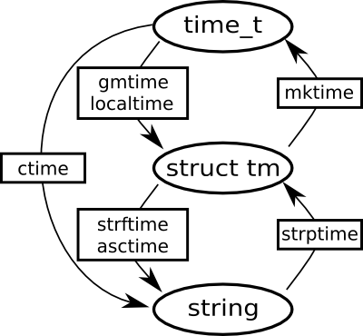

03.22.10
Posted in programming at 12:02 am by danvk
 Last Winter, a dear friend of mine moved from San Francisco to Brooklyn. With an entire continent between us, my principal crossword puzzle buddy and I looked in vain to the internet for help. Was there truly no good way to do a crossword together online?
Last Winter, a dear friend of mine moved from San Francisco to Brooklyn. With an entire continent between us, my principal crossword puzzle buddy and I looked in vain to the internet for help. Was there truly no good way to do a crossword together online?
The New York Times offered an applet, but it proved to be finicky and would only let us do the most recent day’s puzzle. A friend’s project offered hope, but only led to “Service Temporarily Unavailable”.
Enter: lmnowave!
lmnowave is a crossword puzzle gadget for Google Wave. To do a crossword puzzle with a friend, you’ll both need Google Wave Accounts.
Once you’ve got that taken care of, click this big link to get going:
You should see something like this:
Click the “Install Icon” and create a new wave. You’ll see a crossword puzzle icon in your toolbar:

Click it to add a crossword gadget. It should look like this:
If you’re using Chrome or Safari, you may get a warning about not being able to upload puzzle files. This is fine — just switch to Firefox for a minute or try one of the built-in Onion puzzles.
If you have a .puz file on your computer (perhaps from your times subscription), drag it onto the big lmnowave icon:
The puzzle will load instantly. Now drag a friend into the wave:

and you’re ready to compete or collaborate as you see fit! Each player gets his or her own color, so you can keep track of who’s filled in each square:

lmnowave is an open-source project written entirely in JavaScript. If you’d like to contribute, check it out on github. Run into a bug or have a feature request? Let me know here.
Permalink
12.26.09
Posted in math, programming at 10:45 am by danvk
In a previous post, I discussed downloading several years’ worth of New York Times Crosswords and categorizing them by day of week. Now, some analysis!
Here were the most common words over the last 12 years, along with the percentage of puzzles in which they occurred:
| Percentage |
Word |
Length |
| 6.218% |
ERA |
3 |
| 5.703% |
AREA |
4 |
| 5.413% |
ERE |
3 |
| 5.055% |
ELI |
3 |
| 4.854% |
ONE |
3 |
| 4.585% |
ALE |
3 |
| 4.496% |
ORE |
3 |
| 4.361% |
ERIE |
4 |
| 4.339% |
ALOE |
4 |
| 4.317% |
ETA |
3 |
| 4.317% |
ALI |
3 |
| 4.227% |
OLE |
3 |
| 4.205% |
ARE |
3 |
| 4.138% |
ESS |
3 |
| 4.138% |
EDEN |
4 |
| 4.138% |
ATE |
3 |
| 4.048% |
IRE |
3 |
| 4.048% |
ARIA |
4 |
| 4.004% |
ANTE |
4 |
| 3.936% |
ESE |
3 |
| 3.936% |
ENE |
3 |
| 3.914% |
ADO |
3 |
| 3.869% |
ELSE |
4 |
| 3.825% |
NEE |
3 |
| 3.758% |
ACE |
3 |
(you can click column headings to sort.)
So “ERA” appears, on average, in about 23 puzzles per year. How about if we break this down by day of week? Follow me past the fold…
Read the rest of this entry »
Permalink
08.08.09
Posted in boggle, math, programming at 10:35 am by danvk
Why is finding the highest-scoring Boggle board so difficult? It’s because there are so many boards to consider: 2^72 for the 4×4 case and 2^40 for the 3×3 case. At 10,000 boards/second the former corresponds to about 2 billion years of compute time, and the latter just two years. Just enumerating all 2^72 boards would take over 100,000 years.
So we have to come up with a technique that doesn’t involve looking at every single board. And I’ve come up with just such a method! This is the “exciting news” I alluded to in the last post.
Here’s the general technique:
- Find a very high-scoring board (maybe this way)
- Consider a large class of boards
- Come up with an upper bound on the highest score achieved by any board in the class.
- If it’s lower than the score in step #1, we can eliminate all the boards in the class. If it’s not, subdivide the class and repeat step #2 with each subclass.
Classes of Boards
By “class of boards”, I mean something like this:
| {a,e,i,o,u} |
{a,e,i,o,u} |
r |
| {b,c,d,f,g,h} |
a |
t |
| d |
e |
{r,s,t,v} |
The squares that contain a set of letters can take on any of those letters. So this board is part of that class:
and so is this:
All told, there are 5 * 5 * 6 * 4 = 600 boards that are part of this class, each with its own score. Other fun classes of boards include “boards with only vowels” (1,953,125 members) and “boards with only consonants” (794,280,046,581 members).
Follow me past the fold for more…
Read the rest of this entry »
Permalink
02.24.09
Posted in programming at 10:04 pm by danvk
Here’s a handy chart of the C Standard Library functions in time.h:

The ovals are data types and the rectangles are functions. The three basic types are:
- time_t: number of seconds since the start of the UNIX epoch. This is always UTC!
- struct tm: A broken-down date, split into years, months, seconds, etc. In Python, it’s a tuple.
- string: Any string representation of a time, e.g. “Wed Jun 30 21:49:08 1993″.
Generally you either want a time_t (because it’s easy to do arithmetic with) or a string (because it’s pretty to look at). So to get from a time_t to a string, you should use something like strftime("%Y-%m-%d", localtime(time())). To go the other way, you’d use mktime(strptime(str, "%Y-%m-%d")).
This library has been around since at least 1982. It’s been replicated in many other languages (Python, Perl, Ruby). We seem to be stuck with it.
Read on for my rant about why this is all idiotic.
Read the rest of this entry »
Permalink
06.12.08
Posted in programming, web at 12:41 am by danvk
Inspired by the sorttable library, I’ve done some Javascript hacking over the last day and created dragtable, a complementary library which lets you drag column headers around to rearrange HTML tables. A demo will make everything clear:
| Name |
Date |
Favorite Color |
| Dan |
1984-07-12 |
Blue |
| Alice |
1980-07-22 |
Green |
| Ryan |
1990-09-23 |
Orange |
| Bob |
1966-04-21 |
Red |
|
Drag the column headers to rearrange the table. dragtable is incredibly easy to use. To make a table rearrangeable, just add class=draggable to the table tag. And, if you set class="draggable sortable", you can have a table that’s simultaneously sortable and rearrangable! For more details and a download link, check out the dragtable page.
I’m calling this v0.9 since I’m sure there are plenty of bugs and tweaks left to make. I’d love to get some feedback, so take it for a spin and tell me what you think!
Update: I’ve added full-column dragging and bumped the version to 1.0. Head on over to the dragtable, grab a copy, and let me know what you think!
Permalink
« Previous Page — « Previous entries
Next entries » — Next Page »